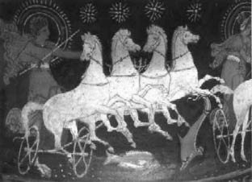

Tanrı Helyos arabasıyla güneşi koştururken
Okyanus Kızı güzel Klimene'nin oğluydu sevimli, yaramaz Faeton (Phaeton).
Gerçi Faeton, adının "parlak, ışıldayan" anlamına geldiğini de biliyordu bilmesine, ama yeni yetmelik çağında bile daha babasının kim olduğunu bilmiyordu! Bu arada sokak arkadaşlarından Epafos (Epaphos), kendisinin Baştanrı Zeus'un oğlu olduğunu söylüyordu şişine şişine! Sırf babası belirsiz Faeton'un damarına basmak için!.. Artık bu konuda diğer arkadaşlarının da iğneli sözlerine dayanamadığı bir gün, babasının kim olduğunu ille de söylemesini istedi anası Klimene'den. Anası da şişine şişine, Güneş'in oğlu olduğunu söyledi ona... Haliyle Faeton böyle bir şeye inanamadı. O yüzden de gerçeği kendi gözleriyle görebilmek için doğruca Güneş tanrısı Helyos'un (Helios) oturduğu ve duvarlarından ışıklar saçılan sarayına gitti... Gerçekten de bu saraya değil ölümlüler, tanrılar bile giremezdi öyle elini kolunu sallaya sallaya!.. Ama kimseler engellemedi onu saraya girerken... Ne var ki duvarlarından, camlarından püskürüp püskürüp gelen ışıklarla boğuşaraktan zar zor girebildi saraya ve az çok seçebildiği ilk odaya da hemen daldı. Odada parlak tacıyla tahtında oturan güneş tanrısı Helyos; "Gel bakalım Faeton," dedi gülümseyerekten. "Otur şöyle yanıma da, derdini söyle!" Faeton söyleyeceği sözü hiç dolandırmadı: "Ben anama sordum. Benim babam senmişsin. Ben de doğru mu diye bunu sana sormaya geldim..."
Tanrı Helyos, küçük yaramaz oğlunun altın saçlarını uzun uzun okşadı bütün sevecenliği ve hasretiyle... Sonra da anasının söylediklerini doğruladı. Ama Faeton gene de pek inanmışa benzemiyordu. "Bak güzel oğlum," dedi bunun üzerine tanrı Helyos. "Bana inanabilmen için benden ne dilersen dile; cehennemin Stiks Irmağı üzerine ant içiyorum ki, dileğini hemen yerine getireceğim!"
Belki de Güneş'in oğlu olduğundan Faeton, ta çocukluğundan beri gökyüzüne ve orada gördüklerine hayrandı hep. Hele hele Akdeniz'in yaz gecelerinde çok az uyurdu o yüzden. Zaten koyu mavi göklerde uçuşup oynaşan yıldızlar uyutmazdı onu; onunla hep oynaşmak isterlerdi... Bazı günler de Güneş tanrısının koşturduğu o ışıklı arabaya bakar bakar; "Bu arabayı bir günlüğüne de olsa, biraz ben koştursam!" diye iç geçirir; uzun uzun düşlere dalar giderdi. İşte şimdi düşünde görse bile inanamayacağı bir gerçekle yüz yüzeydi artık: Güneş'in öz oğluydu! "Baba, şu senin atlarla bir günlüğüne ben koşturacağım Güneş'i gökyüzünde!" dedi içindeki bitmeyen o çocukluk ateşiyle... Ne var ki Güneş tanrısı Helyos birden irkildi; hatasını anladı. Ama oğlunun böylesi bir istekte bulunabileceğini de doğrusu aklının ucundan bile geçirmemişti!.. "Oğlum," diye başladı umarsız, "sen yeni yetme bir delikanlı olarak bırak kendini, o ölümsüz Baştanrı Zeus bile kullanamaz bu arabayı! Bahçede gördüğün o delişmen atlar; öyle herkesi dinlemez... Okyanuslardan kalkıp dik dağlardan tırıs geçmek ve daha sonra canavarların içinden sıyrılıp dörtnala gökyüzüne tırmanmak, sonra gene o yüksekliklerden yeryüzüne doğru alçalmak öyle pek kolay değil, sevgili güzel oğlum!.. Ben bile bazen elimde olmadan alçaldım mı, etraf neredeyse tutuşacak gibi oluyor!" Faeton sarayın bahçesindeki Güneş'in atlarına dikmişti gözlerini hep... Babası tanrı Helyos'u dinlemiyordu bile...
Güneş'in atları da her günkü gibi koşu sonrası okyanusta yıkanmış, karınlarını doyurmuşlardı. Sarayın bahçesinde az sonra gökyüzünde birlikte yeniden başlayacak koşuyu bekliyorlardı. Arada bir de kişniyorlardı sabırsızlıklarını duyurmak için... Ne var ki Güneş tanrısı da oğlu ne isterse yerine getireceğine ant içmişti bir kez; artık dönemezdi... Zaten oğlu Faeton da hınzır bir "dediğim dedikçi"ydi!.. O yüzden babası daha sözlerini bitirir bitirmez, bir ok gibi fırlayıp sarayın bahçesindeki atların yanında aldı soluğu...
Gökyüzündeki yıldızlar çoktan çekip gitmişlerdi uykularına... Yalnızca Şafak tanrıçası gül parmaklı Eos kalmıştı ortalıkta. O da yeri, göğü ve de denizleri habire kızıla, maviye, safran sarısına boyuyordu acele acele...
Faeton dizginleri eline alıp atlara deh dediğinde, haliyle atlar sürücülerinin çaylak biri olduğunu hemen anlayıverdiler! Bu yüzden de delicesine bir hızla, altlarında uzanan ovayı ve yüksek bir dağı aştılar. Sonra da yıldızların uykuya çekildiği gökyüzünün derinliklerine doğru şahlanıp dörtnala uçmaya başladılar... Ne var ki atların delişmenliğinden ürken Faeton bir süre sonra dizginleri bırakıverdi elinden! Artık dizginsiz kalan atlar başıboş, hızla yeryüzüne doğru alçala alçala koşuyorlardı. Ne var ki Güneş'in arabasının saçtığı ışık ve ateş yüzünden Kazdağları, Parnasos, tanrıların ülkesi Olimpos'taki tepeler ve nice vadiler ardı ardına tutuştu... Haliyle ırmaklar göller buharlaşıyor, kaçacak delik arıyorlardı. Büyük bir korkuya kapılan Nil Nehri de her nasılsa başını bir yere sokup saklanabildi!..– Zaten o gün bugündür Nil ırmağının başı olan kaynağının nerede olduğu hâlâ bilinemiyordu! – Güneşin atları Orta Afrika göklerine geldiklerinde de artık iyice alçaldılar ve oralardaki insanların derilerini yakıp kararttılar!..
Üstelik Olimpos'ta oturan tanrılar da sıcaktan boğulur gibi oldular ve Baştanrı Zeus'tan hemen yardım istediler... Zeus, gönderdiği bir yıldırımla Faeton'un arabasını anında tutuşturdu... Ve Güneş'in oğlu alevler içinde, İtalya'daki Po Irmağı'na düştü. Po Irmağı da arabadan püsküren alevleri söndürdü hemen. Ormanlardan, ırmak kenarlarından koşup gelen ve teyzeleri olan perikızları da, topluca yanık ezgiler, türküler eşliğinde yaramaz Faeton'u sevip okşamaya başladılar. Güneşin Kızları da geldiler daha sonra ve onun düştüğü yerin çevresinde kavak ağaçlarına dönüştüler hemen... Sırf arada bir salınıp sallanaraktan estirdikleri yellerle; bu kocaman ateş yürekli delişmen kardeşlerini serinletmek için...
Ne var ki daha sonraları dünyaya gelen Faeton'un bütün yaramaz arkadaşları da, Güneş'i ve atlarını gökyüzünde özgürce koşturma hasretiyle yanıp tutuşmaya başladılar...